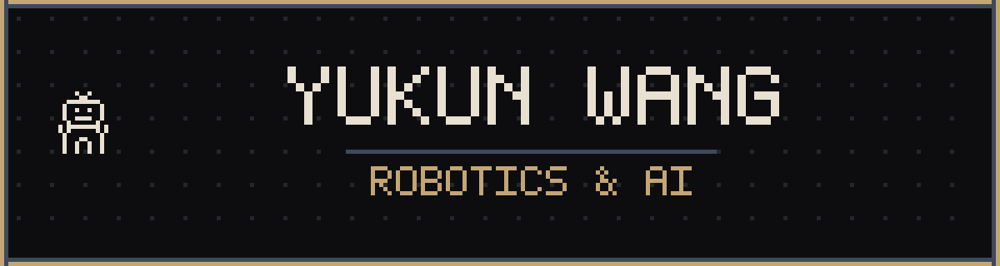

MEng Robotics & AI @ UCL
Third-year MEng Robotics & AI at UCL. Interests: reinforcement learning, world models, robot control and manipulation, and multimodal policy learning. Focus on pipelines from high-fidelity simulation to real robots.
伦敦大学学院（UCL）MEng Robotics & AI 三年级。研究兴趣：reinforcement learning、world models、机器人运控与操作、multimodal policy learning。关注从高保真 simulation 到真机的 pipeline。
streaming dance generation
2026 — Present · UBTech
VLA post-training, industrial deployment, and an Isaac Sim data pipeline for the Cruzr S1 robot.
优必选实习：VLA post-training、industrial 场景 deployment，以及面向 Cruzr S1 的 Isaac Sim data pipeline。
2025.06 — 2025.10 · Tsinghua IIIS × Zhongguancun Academy
Research intern in embodied intelligence and sim-to-real.
清华 IIIS × 中关村学院研究助理，方向为 embodied intelligence 与 sim2real。